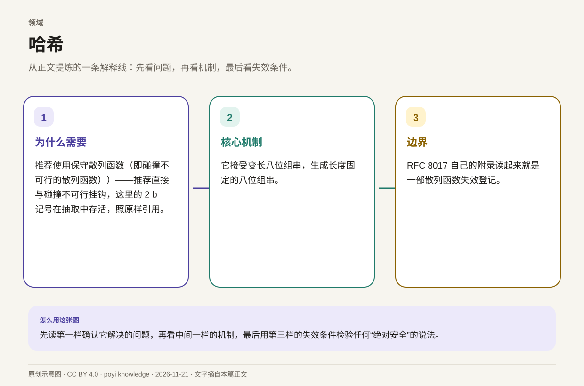

原理与机制
领域：哈希（Hash Functions）。留存语料里定义最完整的是 RFC 8017 附录 A.1：「Hash functions are deterministic, meaning that the output is completely determined by the input.Hash functions take octet strings of variable length and generate fixed-length octet strings.」（散列函数是确定性的，即输出完全由输入决定；它接受变长八位组串，生成长度固定的八位组串。）该节随后为方案所用散列加上两个不可行性要求：抗碰撞性写作 「This means that it is infeasible to find two distinct inputs to the hash function that produce the same output.」（即找出两个不同输入产生同一散列输出是不可行的。），单向性写作 「A collision-resistant hash function also has the desirable property of being one-way; this means that given an output, it is infeasible to find an input whose hash is the specified output.」（抗碰撞散列同时具备单向性：给定输出，找到散列等于该输出的输入是不可行的。）因此散列就是由变长输入确定计算的定长摘要，其安全概念是两个寻找问题——找碰撞伙伴、找原像——而不是函数本身的保密。RFC 6101 词汇表条目（rfc6101.txt:2847-2850）用一句话说了同样的内容，引文见下文用途一节。

为什么重要
RFC 8032 说明了散列部件为何必须精心挑选：EdDSA 的参数表要求 「A cryptographic hash function H producing 2b-bit output.Conservative hash functions (i.e., hash functions where it is infeasible to create collisions) are recommended」（一个产生 2b 比特输出的密码学散列函数 H；推荐使用保守散列函数（即碰撞不可行的散列函数））——推荐直接与碰撞不可行挂钩，这里的 2*b 记号在抽取中存活，照原样引用。EdDSA 对碰撞风险的回应是结构性的：「EdDSA provides collision resilience, meaning that hash-function collisions do not break this system (only holds for PureEdDSA).」（EdDSA 提供碰撞韧性，即散列函数碰撞不能破坏该系统（仅对 PureEdDSA 成立）。）并且 「The collision resilience property means EdDSA is secure even if it is feasible to compute collisions for the hash function.」（碰撞韧性意味着即便散列碰撞已可计算，EdDSA 仍然安全。）换来的代价是便利性，预散列参数写得很明白：「This may be the identity function, resulting in an algorithm called PureEdDSA, or a collision-resistant hash function such as SHA-512, resulting in an algorithm called HashEdDSA.」（它既可以是恒等函数（得到 PureEdDSA），也可以是 SHA-512 这样的抗碰撞散列函数（得到 HashEdDSA）。）只有 HashEdDSA 变式依赖散列函数，碰撞韧性的保证只属于 PureEdDSA，留存文本没有把它再往外扩展。
应用与实例
SSL 3.0 在每一层既定义又使用散列函数。它的词汇表条目是：「A one-way transformation that converts an arbitrary amount of data into a fixed-length hash.It is computationally hard to reverse the transformation or to find collisions.MD5 and SHA are examples of one-way hash functions.」（把任意量的数据转换成定长散列的单向变换；求逆与找碰撞在计算上困难；MD5 与 SHA 是单向散列函数的例子。）用途同样由该文档印出。连接完整性方面：「Secure hash functions (e.g., SHA, MD5) are used for MAC computations.」（安全的散列函数（如 SHA、MD5）用于 MAC 计算。）数字签名方面：「In digital signing, one-way hash functions are used as input for a signing algorithm.In RSA signing, a 36-byte structure of two hashes (one SHA and one MD5) is signed (encrypted with the private key).」（数字签名中，单向散列函数作为签名算法的输入；RSA 签名是对两个散列（一个 SHA、一个 MD5）拼成的 36 字节结构用私钥加密。）并置两种算法的设计理由写在附录 F.1.5：「SSL uses hash functions very conservatively.Where possible, both MD5 and SHA are used in tandem to ensure that non-catastrophic flaws in one algorithm will not break the overall protocol.」（SSL 对散列函数的使用非常保守：凡能并置之处，MD5 与 SHA 一起使用，以保证单一算法的非灾难性缺陷不会破坏整个协议。）并置构造因此是明确针对任何单一算法缺陷的对冲——这与下文边界一节所记录的事实相关。
边界与攻击面
RFC 8017 自己的附录读起来就是一部散列函数失效登记。MD4 方面：「The cryptanalysis of MD4 has progressed significantly in the intervening years.」（多年来 MD4 的密码分析已大幅推进。）以及 「Dobbertin [MD4] demonstrated how to find collisions for MD4 and that the first two rounds of MD4 are not one-way」（Dobbertin 演示了如何为 MD4 找碰撞，并证明其前两轮不是单向的）。MD5 方面：「Further advances have been made in the cryptanalysis of MD2 and MD5」（MD2 与 MD5 的密码分析又有新的进展），在 Stevens 等人的结果之后，标准下结论：「MD2 and MD5 should be considered cryptographically broken and removed from existing applications.」（MD2 与 MD5 应被视为密码学上已破，应从现有应用中移除。）SHA-1 方面：「There have also been advances in the cryptanalysis of SHA-1.」（SHA-1 的密码分析同样有进展。），Wang 等人的结果基于 「on using a differential path to find collisions in SHA-1, which conclude that the security strength of the SHA-1 hashing algorithm is significantly reduced.」（利用差分路径为 SHA-1 找碰撞，其结论是 SHA-1 的安全强度被显著降低）。标准的补救是 「To address these concerns, only SHA-224, SHA-256, SHA-384, SHA-512, SHA-512/224, and SHA-512/256 are RECOMMENDED for new applications.」（为应对这些担忧，新应用只推荐使用 SHA-224、SHA-256、SHA-384、SHA-512、SHA-512/224 与 SHA-512/256。）碰撞为何关系到签名：「a collision attack is easily translated into a signature forgery.」（碰撞攻击可以轻易转化为签名伪造。）附录还量化了已知最好的通用碰撞攻击，但指数记号在这次抽取里没有存活：第 3665 行印作 「best (known) collision attacks against these hash functions are generic attacks with complexity 2L/2, where L is the bit length of the hash output」（对这些散列已知最好的碰撞攻击是复杂度为 2L/2 的通用攻击，L 为散列输出的比特长度）——上标被压平为 2L/2，所以只按印刷形式引用，平方根级的指数要从上下文自行读出。
历史与背景
留存语料为协议史中的散列一侧给出的断代记录是 RFC 7568：一份 2015 年 6 月的标准级文档（第 14 行），并更新 RFC 5246 的回退规则（第 9 行 Updates: 5246）。其摘要写道 「The Secure Sockets Layer version 3.0 (SSLv3), as specified in RFC 6101, is not sufficiently secure.This document requires that SSLv3 not be used.」（RFC 6101 所规定的 SSL 3.0 不够安全，本文要求不再使用 SSLv3。）随后 「The replacement versions, in particular, Transport Layer Security (TLS) 1.2 (RFC 5246), are considerably more secure and capable protocols.」（替代版本——尤其是 TLS 1.2（RFC 5246）——是更安全、能力更强的协议。）与散列相关的里程碑在第 4.3 节：「all SSLv3 primitives rely on SHA-1 [RFC3174] and MD5 [RFC1321]: these hash algorithms are considered weak and are being systematically replaced with stronger hash functions, such as SHA-256 [FIPS180-4].」（SSLv3 的全部原语都依赖 SHA-1 与 MD5；这些散列算法被视为薄弱，正被 SHA-256 等更强的散列函数系统性替换。）因此这份文献断代的是一次共识行动：到 2015 年 6 月，IETF 要求停用 SSLv3，其 SHA-1/MD5 组合被认定薄弱并正在被系统性替换。留存文本没有给出任何散列算法的发明者或发明年代，该条目也不作此类断言。
逐步示例与核验
范围模型
列出属于该条目的代表实体、相邻实体、时间断点与跨域关系；范围外对象不并入。
参考出处
- Wikipedia search entry for 哈希. https://zh.wikipedia.org/w/index.php?search=%E5%93%88%E5%B8%8C
- A Brief History of Cryptology and Cryptographic Algorithms (Dooley, Springer 2013). https://link.springer.com/book/10.1007/978-3-319-01628-3